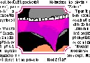
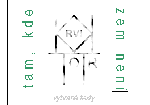
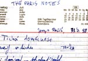
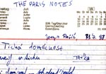

|
retrokruh krvik totr |
|
retrokruh krvik totr |
|
 |
|
1998: Krvik Totr zaèali vystupovat živì – z nových povídek ovìøených živáky pak sestavili album Jak krteèek ke kalhotkám pøišel?. Ke konci roku vydali Pìtiletku (album vzpomínkových kouskù doby minulé) a Tam, kde Zem není (kniha nejlepších textù doby souèasné). |
|
Tragédie o dvou peckách • mp3 Vypravìè:
Na vernisáži výstavy jednoho výtvarníka. První:
U nás kdyby byla válka, tak jdu domù. Druhý:
Zùstal by tu jen hlídaè. Ten tu být musí. První:
Na vernisáž by mì nikdo nedostal. Sedìl bych doma a koukal na to v
telce. Druhý:
Nìkdo by pøišel a utøel by hlídaèi hlavu. První:
Vojsko! Druhý:
Ano, vojsko. Vtrhli by sem a obrazy by byly na madìru. Tøetí:
Já na tyhlety vernisáže strašnì rád chodim. Ètvrtý:
Já taky. Tady nasytíš všechny smysly dohromady. Nìkdy jsou tu
fajn obrázky... taky pìkný buchty... mluvìj tu chytrý lidi...
nevaøej tu špatnì... Tøetí:
A neni tu zima. Hele, co øikáš tomuhle? Ètvrtý:
Myslím si, že to je celkem ojedinìle zpracované téma, nicménì
minimálnì nosné, zvláštì pro specificky pojatou perspektivu, z níž
autor vybruslil pøevelice... hele, pøinesli chlebíèky! Pátý:
Tahy na tomto obrazu jsou mnohem zajímavìjší než minule. Šestý:
Spíš vydaøenìjší. Pátý:
Ano, máte pravdu! Tuhle ten èlovíèek má mnohem rozjaøenìjší
rysy. Šestý:
Taky drží flašku rumu. Tou jsou pak tahy! Pátý:
Když tenhle èlovìk kreslí pijatiky, i sukovice spustí. Šestý:
Podívejte, tamhle kráèí ten pan výtvarník! Vypravìè:
Na scénu pøichází výtvarník. Výtvarník:
Tohle jsem namaloval v koupelnì. Malá se cachtala ve vanì a celý
to mý božský plátno bylo vod pìny. Sedmý:
Ó bravo, mistøe! Výtvarník:
Malá má teïkonc chemii. Berou H2O. Sedmý:
Há dvì co? Výtvarník:
H2O. To je náhodou boží
vìc. Bez toho bysme byli takovýhle krychlièky a dìlali bysme
hhhhhhhhhm hhhhhhhhhm. Sedmý:
Tohle jste taky kreslil vy? To je teda pìkná patlanice. Výtvarník:
Ty vole, to je výtvarka jak svinì, šéfe! Vypravìè:
Obdivovatel mlèí. Výtvarník:
Hele nežvaò, sklapni, drž hubu! - Dobøe, jdu domù. Vypravìè:
Výtvarník odchází. Kráèí ulicí. Výtvarník:
Hùùùùùùù... Vypravìè:
Výtvarník zahuèel do kanálu. Nedával pozor a už je tam. Nazítøí
objeví jeho ledovì klidné tìlo rybáøi na bøehu Rokytky. Slavnost
tohoto kanálu byla zpeèetìna. Z výtvarníka se stala neživoucí
legenda. Získal in memoriam titul král Kanáles. V
kanálu bylo smutno. Smrad z kanálu byl vnímavý. Všiml si huèícího
výtvarníka a bylo mu to líto. Když
se ulice vyprázdnily a svìtla potemnìla, smrad si vyšel na èerstvý
vzduch. Procházel se po ztichlé Champs-Élysées. Proudy korzujících
bezdomovcù si zacpávaly nosy, když je míjel. Úsmìv ani pozdrav
mu neopìtovali. Zahnul
do postranní ulièky. Proti nìmu cválal kùò. Ještì krok a zvíøe
padlo smradem. Jezdec se stoèený do klubíèka modlil, aby to pøešlo.
Smrad pøešel a vzal roha za nejbližší roh. Tam,
s mìsícem v nadhlavníku, postávali poslední pùlnoèní milenci.
Smrad zùstal skryt ve stínu košaté lípy a pozoroval je. Ona:
Nechceš mi nìco øíct? Onen:
A co by to mìlo být? Ona:
Nìjakej romantickej plk. Onen:
Mám tì rád. Ona:
Víc... Onen:
Mám tì radši. Ona:
Víc... Onen:
Mám tì nejradši. Jsi krásná jako lyrika bažantù. Jako malá
vodní harfa, která brnká na vlnky. Jako nemyté okno, které se
umyje. A teï øekni nìco ty svému malému medvídkovi. Ona:
Jsi huòáèek. Jsi roztomilý opraváø elektrospotøebièù s tím
nejvìtším šroubovákem na svìtì. Navždy budeš mùj všivák. Onen:
Miluji tì, nic víc. Ona:
Nic míò. Vypravìè:
Zadul vítr. Onen:
Cítím... vìtérek v tvých voòavých vlasech. Ona:
Cítím... tvùj parfém, který ke mnì tenhle vánek zanáší. Onen:
Cítím... (èmuch, èmuch, èmuch) miláèku, opravdu sis dnes myla
hlavu? Ona:
Ano, tøikrát. Ale... ty sis dneska nemyl nohy, že? Onen:
Myl! Ona:
Pak sis tedy musil uprdnout. Onen:
Já myslel, že to tys ho pustila. Ona:
Ale drahý, to byl pøeci vždycky tvùj výdobytek. Onen:
Ty jsi dobytek! Ona:
Ty hulváte, ty smrïolo, co mi to tady... fuj, to je smrad! Ty kanále,
kliï se mi z oèí! Onen:
Seš vobyèejná žumpa, shnilý hovno, seš prostì hnùj! Ona
(zacpe si nos): Odcházím. Takovej smrad se nedá vydržet. Onen
(zacpe si nos a volá): Tomu neuteèeš, na to je potøeba mýdlo,
ty prase! Ona:
Hùùùùùùù... Onen:
Proboha, dušinko, kam s to zahuèela? Miláèku, žiješ? To jsem
nechtìl! Hùùùùùùù... Vypravìè:
Smrad z kanálu si povzdechl a k nohám mu spadli tøi pøiotrávení
drozdi. Smrad se odplížil za mrtvými milenci do spleti stok. Zvídavec:
Mohl za jejich smrt smrad? Vypravìè:
Smrad ano, ale mrnì, øekl by puch Johna Lennona. © 1998 Bouillon/Faquire |
Z dobového tisku: Paøíž:
Krvik Totr zameteni K jakému faux pasu došlo v paøížských Toulleriích dnes ráno. Ano, to nebyl žádný trapas nebo problem, to byl férový faux pas (èti fó pa). Krvik Totr pokojnì psali a najednou je jakýsi povaleè se zahradnickou vizáží smetl z cestièky, kde v tu chvíli cvièili spánek pro nejnovìjší repliku nejnovìjší povídky, a koulel je jak Havel sudy rovnou k popelnicím. Než staèili nìco øíct – totiž, neb nemohli nic øíct (francouzsky neumìli ani slovo), ocitli se v naprosté popelnici! Tak to by vážnì nešlo, tohleto! Ten zahradnický šmejd vyhodit! Ale ne tu popelnici! Pozdì... Oni snad neumìj slovo èesky! – Marjápanno! Fuj, na Krvik y pár týdnù nechoïte!
|
© 2003 Krvik Totr Limity.

 
